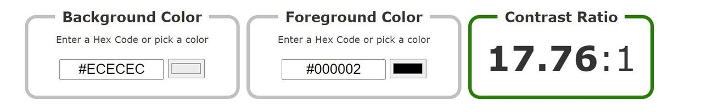

We have kept our page simple, by using colors like black and white. The orange color that we have assigned to our nav bar, is inspired by the Oslomet webpage. We wanted to create a sense of connection between this first-year “blog” and the official university website. We have also used this to highlight our nav bar, making it easier to access and more convenient for the user.
We decided to use a light background with dark text to make the information stand out and be easy to read. The contrast we have has a ratio of 17.76:1, which is way past the standard contrast ratio of 4.5:1 that all websites should have 
Another thing that we have put effort into is page structure content. We have very clearly labeled the different regions of the page on the navbar, in a logical and efficient way. “Home” “reflection essay” “Accessibility” and “Topical information” and “fun page” are our five regions, and each region has a very clear heading. We have done this to improve the navigation and orientation of the web page. We have furthermore also made the regions change the background color and text color when you hover over them with a mouse. This had been done to make it easier for the visitor to find the information it needs.
We have also created a “scroll to the top” button. This returns you to the top of the page when you have scrolled all the way down. The user can get back to the point of where they started, and also back to our five regions; if they wish to find some other information
Aliquam erat volutpat. In ut hendrerit arcu. In ac libero purus. Vestibulum faucibus ligula a massa vehicula dictum. Nam a lacus vulputate, volutpat felis sed, lacinia tellus. Nulla a purus urna. Proin a tellus diam. Nullam hendrerit ante lacus, ac fermentum leo tempus nec. Aliquam vehicula venenatis viverra. Curabitur dolor est, finibus et vestibulum sed, mollis in neque. Suspendisse et nulla a ante feugiat efficitur eu a odio. Phasellus porta ac nulla malesuada tempor. Vestibulum et nibh vel erat ultrices gravida at eget ante. Nam sollicitudin nibh metus, et commodo ipsum mattis laoreet. Quisque ultrices, lectus ac egestas cursus, neque quam venenatis nisl, eget efficitur arcu nisi in justo. Fusce non erat at metus ultricies.